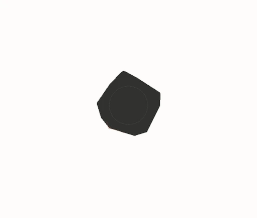
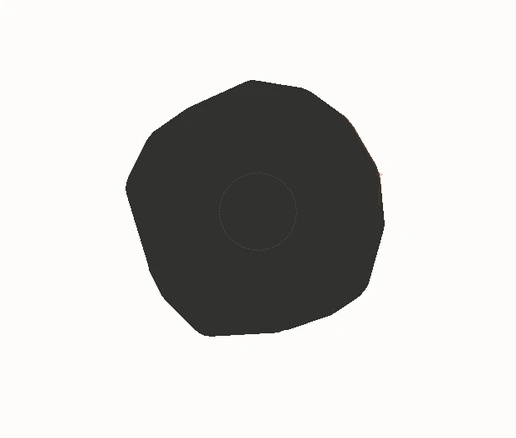

Stronger feedback
Three illustrative paths with increasing feedback: weak feedback, strong feedback, and autonomous recursive self-improvement. Rust markers are new discoveries: diamonds for humans, triangles for AI. Charcoal regions are filled knowledge. Shapes use the same spatial scale across both figures. The plots show filled area over time on a shared linear scale, except RSI, which uses ten times the vertical range.
AI · weak feedback

AI · strong feedback

AI · true RSI
10× vertical range
Loading the comparison.